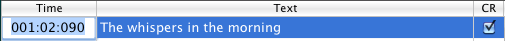

Si possono facilmente cambiare i vari attributi del testo karaoke tramite il pannello Font ("Mostra Font" dal menu "Karaoke/Font"). La formattazione viene applicata a testo e accordi. La visibilità degli accordi si cambia dal menu "Karaoke/Accordi".
Se il checkbox "Adatta Dim" è spuntato, QMidi ridimensiona il testo a seconda dell'altezza della finestra in modo che un numero specificato di righe siano visibili. In questo caso gli accordi possono essere ridimensionati proporzionalmente trascinando la linea che suddivide testo e accordi.
Se questa opzione è disattivata (default) il testo utilizza la formattazione della finestra karaoke/mirror.
Se questa opzione è selezionata, il testo e i suoi attributti verrano salvati in formato RTF (o "RTFD"). In questo caso è possibile formattare il testo solo in modalità "Modifica".
NB: All'apertura di un file RTF, se il testo ha lo stesso colore dello sfondo della finestra, verrà cambiato in modo da essere visibile.
Con il menù "Karaoke/Sfondo" è possibile aggiungere un'immagine di sfondo alla finestra karaoke. Si può farlo anche trascinando un'immagine dal Finder sulla finestra.
Si può inoltre associare un'immagine a qualsiasi file multimediale:
Se un file karaoke è stato creato su altre piattaforme, i caratteri accentati non verranno visualizzati correttamente utilizzando la codifica standard Macintosh. Per risolvere questo problema, QMidi permette di scegliere la codifica di testo appropriata ("Karaoke/Codifica") per qualsiasi file karaoke e di salvare questa impostazione all'interno della libreria/playlist. È possibile modificare la codifica di default nella finestra delle Preferenze.
Durante questa operazione, un file di testo verrà creato con lo stesso nome del file multimediale e l'estensione appropriata (txt, rtf, RTFD). Questo file verrà registrato accanto al file multimediale.
Non si dovrebbe mai modificare del testo sincronizzato in modalità "Modifica", perché questo invaliderebbe la sincronizzazione esistente. Il modo sicuro per modificare del testo esistente è la seguente:

La colonna "CR" serve ad aggiungere/rimuovere il carattere a capo.
Il comportamento del pulsante "+" dipende dalla selezione corrente:
QMidi non consente la modifica diretta dei testi MIDI/ID3 incorporati ( MidiKit può effettuare questa operazione sui file MIDI).
Perciò, se si sceglie "Sincronizza" dal menu "Karaoke", un file di testo verrà creato automaticamente. Se l'opzione "Sincronismo per riga" è spuntata, QMidi manterrà solo la sincronizzazione riga per riga.
Se si sta lavorando su un file MIDI, si potrà includere poi il testo modificato scegliendo "Esporta corrente" con l'opzione "Includi testo".
 per abilitare il cursore di sincronizzazione.
per abilitare il cursore di sincronizzazione.Si può ovviamente effettuare il passaggio 4 a player fermo. Non è necessario sincronizzare tutto il testo in una volta: si può correggere la posizione di una riga in qualsiasi momento tornando indietro con la riproduzione e cliccando la riga al momento giusto. Tutte le azioni si possono annullare dal menu "Modifica/Annulla".
Suggerimento: Fare opzione-clic su una riga per spostare la riproduzione alla posizione corrispondente.
Per abilitare la sincronizzazione manuale, fare clic sul pulsante "Modifica" (matita) e quindi doppio clic sulla colonna "Posizione".

La colonna "Posizione" ha il seguente formato: misura:tempo:tick per i file MIDI e HH:MM:SS.centesimodisecondo per ogni altro tipo di media.